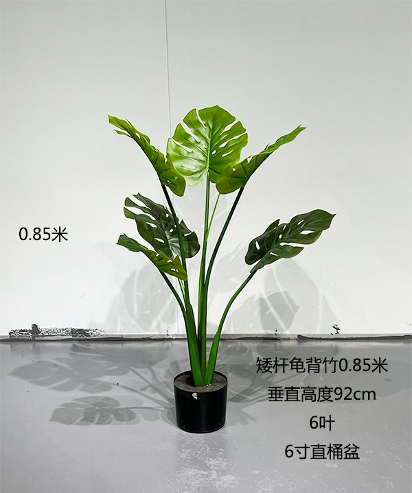
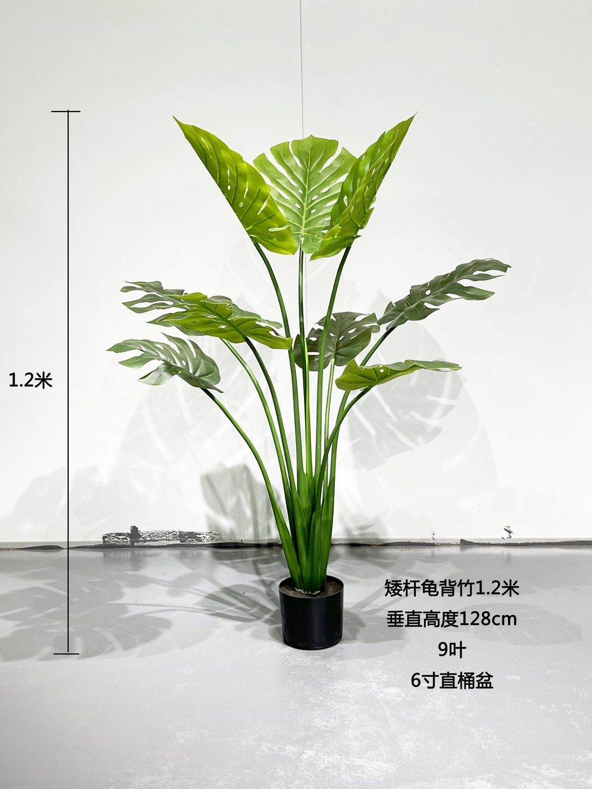
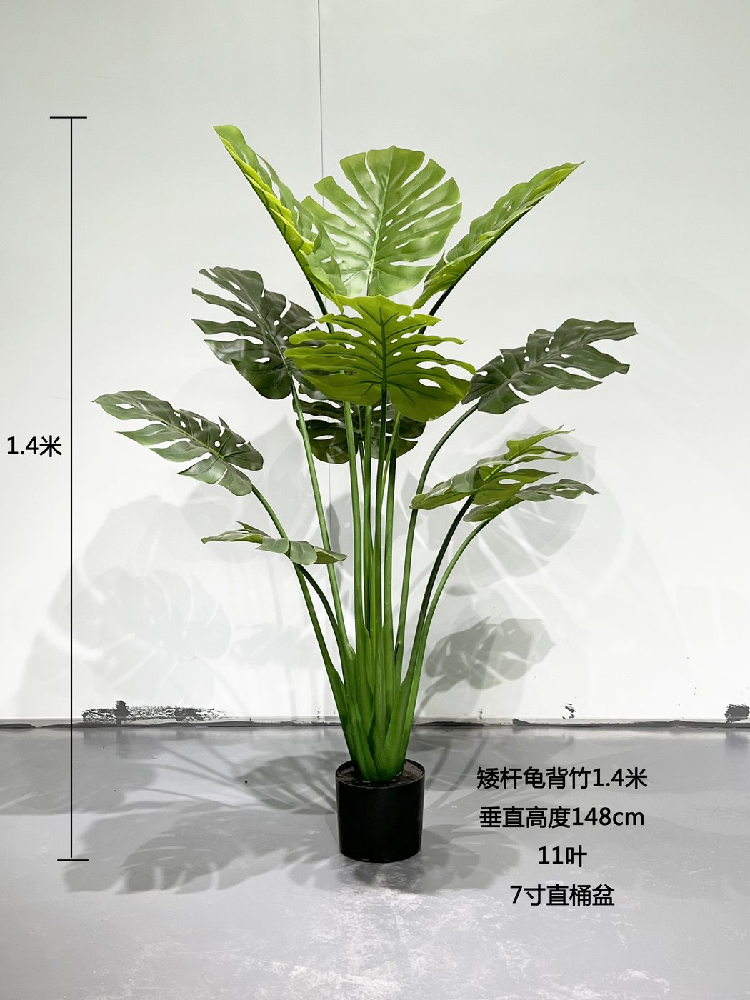

Palms & Tropicals
Short-Stem Monstera
Short-Stem Monstera is a tropical focal point suitable for hotel lobbies, resorts, and large indoor planters. The photographs show examples in heights from 85–160 cm. This is a factory photograph of the actual product; exact dimensions, packing, MOQ, lead time and price are confirmed by the seller on inquiry.
Opens your email application; sending happens there.
Product information
Short-Stem Monstera is a tropical focal point suitable for hotel lobbies, resorts, and large indoor planters. The photographs show examples in heights from 85–160 cm. This is a factory photograph of the actual product; exact dimensions, packing, MOQ, lead time and price are confirmed by the seller on inquiry.
Specifications
| Heights (from photos) | 85–160 cm |
|---|---|
| Product code | LC-N101 |